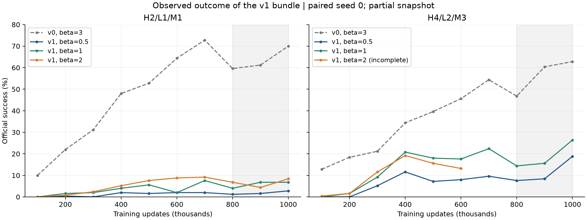
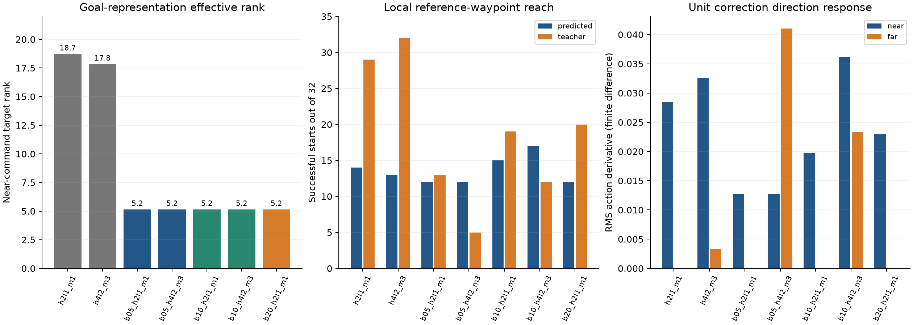

快照：2026-10-31T17:34:53.609068+08:00。5 组完成，1 组仍在训练。所有补充诊断使用 CPU；未修改训练、checkpoint 或补充实验排程。
可直接比较：同一 h/ℓ/M 下 β 的效果。可定位机制：goal_rep 的变化、command 输入敏感性、low loss 到 planner 的梯度。不可分配：最终成功率下降中 command 与 value-only encoder 各占多少。缺失独立训练对照，不能假定效果可线性相加。
| 配置 | 快照状态 | 600k 对齐成绩 | 800k/900k/1M 主分数 |
| hrm_h2l1_m1 | completed | 64.40% | 63.60% |
| hrm_h4l2_m3 | completed | 45.60% | 56.67% |
| hrm_beta05_h2l1_m1 | completed | 2.00% | 1.87% |
| hrm_beta05_h4l2_m3 | completed | 8.00% | 11.60% |
| hrm_beta10_h2l1_m1 | completed | 2.00% | 5.87% |
| hrm_beta10_h4l2_m3 | completed | 17.60% | 18.80% |
| hrm_beta20_h2l1_m1 | completed | 8.80% | 6.53% |
| hrm_beta20_h4l2_m3 | running | 13.20% | 尚未形成 |

M1 的主分数随 β=0.5→1→2 为 1.87→5.87→6.53%；M3 已完成两组为 11.60→18.80%。M3 的 β=2 尚未形成主指标；600k 时，β=0.5/1/2 为 8.0/17.6/13.2%，不支持当前就断言越大越好。
更强的控制证据：五个已完成模型在 800k、900k、1M 的 goal_rep、value、target_value 参数指纹分别完全相同。它们采用同一个 critic 和 encoder，β 之间的差异发生在 policy 学习通路。该结果符合 value-only 梯度隔离、相同初始化与采样流、无全局梯度裁剪的实现。具体模型间的 β 对照仍只有 seed 0。
同样 2048 个原始状态查询上，近端目标表征有效秩从 v0 的 18.74/17.85，降到 v1 各组共同的 5.16。value 与几何进展的符号一致率仍约 89.7%，与旧版约 89–90% 接近。因此没有证据表明 critic 的粗略进展判断整体崩溃；表征压缩和控制适用性需要分开分析。
在 value-only 分支中，encoder 更新不依赖 actor command 或 β，因而可把该分支的表征变化定位到梯度来源变化。但这不说明低有效秩一定丢失了必要信息：有效秩受坐标表示影响，近端 latent MSE 也不能跨编码器直接解释为物理误差。最终成功率贡献仍需 data-command/value-only 的训练对照。
| 配置 | 近端 MSE | 目标有效秩 | 预测/数据 command 动作差 | 近端响应 | 远端响应 | 几何进展符号一致 |
| hrm_h2l1_m1 | 0.1024 | 18.74 | 0.01409 | 0.02851 | 0.00000 | 89.9% |
| hrm_h4l2_m3 | 0.0937 | 17.85 | 0.01261 | 0.03257 | 0.00337 | 89.3% |
| hrm_beta05_h2l1_m1 | 0.1442 | 5.16 | 0.00189 | 0.01267 | 0.00000 | 89.7% |
| hrm_beta05_h4l2_m3 | 0.1469 | 5.16 | 0.01869 | 0.01273 | 0.04106 | 89.7% |
| hrm_beta10_h2l1_m1 | 0.1434 | 5.16 | 0.00366 | 0.01970 | 0.00000 | 89.7% |
| hrm_beta10_h4l2_m3 | 0.1377 | 5.16 | 0.01654 | 0.03623 | 0.02337 | 89.7% |
| hrm_beta20_h2l1_m1 | 0.1365 | 5.16 | 0.00450 | 0.02293 | 0.00000 | 89.7% |

v0 M1 的预测/数据 command 动作差约 0.01409；v1 β=0.5 只有 0.00189，但其正式成功率也由 63.60% 降为 1.87%。单看 gap 缩小会得出错误的乐观结论；近端纠正方向响应也从 0.02851 降到 0.01267，说明输入改变对动作的影响变弱。
M3 变化更明显：v0 近端/远端单位纠正响应约 0.03257/0.00337；v1 β=0.5 为 0.01273/0.04106，β=1 为 0.03623/0.02337。远端槽位在新版中对动作更有影响，但它们是否仍承担期望的 waypoint 语义，不能仅凭敏感性判断。
下表为 1M checkpoint、相同 32 个验证数据起点、最多 100 步内经过参考近端 XY waypoint 的次数；输入 command 保留完整 state 编码：
| 配置 | 原生预测 | 数据 command | 只换近端 | 只换远端 |
| hrm_h2l1_m1 | 14 | 29 | — | — |
| hrm_h4l2_m3 | 13 | 32 | 27 | 19 |
| hrm_beta05_h2l1_m1 | 12 | 13 | — | — |
| hrm_beta05_h4l2_m3 | 12 | 5 | 11 | 6 |
| hrm_beta10_h2l1_m1 | 15 | 19 | — | — |
| hrm_beta10_h4l2_m3 | 17 | 12 | 19 | 7 |
| hrm_beta20_h2l1_m1 | 12 | 20 | — | — |
旧版数据 command 是训练分布；新版数据 command 已是替换输入，不能称为新版的 oracle 性能上界。该诊断衡量参考目标的局部控制能力，不是五项正式任务成功率；原生 planner 可以走另一条有效路线。M3 中给数据 command 反而变差，支持“planner 与 executor 对生成 command 的共同适应改变了接口语义”的假设，尚不能把该现象完全归给单独的 command 开关。
这轮条件（2）包含两项机制：executor 看到预测输入，以及 low loss 经预测均值回到 planner。旧版第二条路径为零。当前 1M 模型的四个固定 64 样本批次中：
| 配置 | high→planner L2 | low→planner L2 | 均值范数之比 low/high | 两梯度平均 cosine |
| hrm_beta05_h2l1_m1 | 8.57 | 9.79 | 1.14 | 0.016 |
| hrm_beta10_h2l1_m1 | 14.78 | 12.92 | 0.87 | 0.043 |
| hrm_beta20_h2l1_m1 | 27.81 | 13.36 | 0.48 | -0.011 |
| hrm_beta05_h4l2_m3 | 5.88 | 28.56 | 4.86 | -0.010 |
| hrm_beta10_h4l2_m3 | 10.67 | 20.36 | 1.91 | -0.036 |
M3 β=0.5 的 low→planner 平均梯度范数约为 high→planner 的 4.86 倍；β=1 降至 1.91 倍。β 不仅改变样本排序，还改变两个目标的相对训练压力。两梯度大多近正交，不能说已经发现强烈的梯度抵消。范数是当前批次的原始梯度，不是 Adam 实际更新量，也不是训练历史或成功率的因果分解。
一个优先检验的机制假设是：部分 plan 槽位被用来承载重建数据动作的内部特征，偏离了可替换、可执行的目标编码。有限的 high loss 仍约束它拟合数据 latent，但这种约束可能不足以维持原有接口语义。
| 固定同一 β、h/ℓ/M | encoder 联合更新 | encoder 仅 value |
| 数据 command | 已有 v0，β=3 | 缺少对照 A |
| 预测 command | 缺少对照 B | 已有 v1；β=3 补充实验已排程 |
在 β=3 下补 A/B，每种 M 各两组，共四个训练运行，才构成完整 2×2 对照。既有 v1 的 β=3 能去除跨轮 β 差异，但仍只能评价两个改动的组合。若进一步区分条件（2）的两个机制，可在预测 command/value-only 下单独停止 low loss 经 command 回到 planner；这不能用纯推理开关代替重新训练。
这些是建议的后续对照，本次没有启动。也没有把旧 encoder 直接替换进新 policy 来声称因果效果：它们的 latent 坐标和配套网络可能不兼容。对纯训练梯度开关做推理期切换，不能撤销其历史训练影响。
数据：attribution_summary.json、v0/v1_checkpoint_probes.json、v1_local_rollouts.json、gradient_probes/mechanism_probes.json。v1 原始日志快照在 v1/snapshot/，旧版对照来自上一份冻结分析。所有 checkpoint 带签名和 SHA256。
敏感性采用中心有限差分 ε=0.02。value-only 模式对外部数据 command 有 stop_gradient，直接对这个接口求 JVP 会产生人为的零；有限差分比较真实前向值，不会受到这个梯度门的干扰。旧版有限差分与之前的解析 JVP 结果已在 1% 相对误差内核对。方向是预测目标到数据目标的单位纠正方向，不是完整 Jacobian 范数。动作探针使用裁剪前 Gaussian 均值；局部环境 rollout 使用实际裁剪动作。